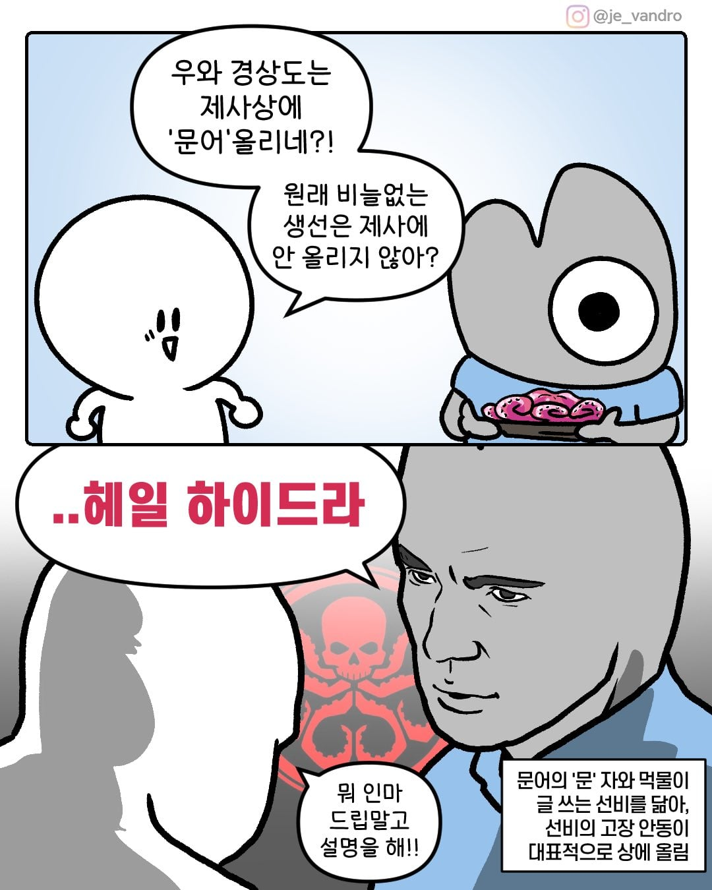

다른지역은 문어 안올려?

다른지역은 문어 안올려?
돔베고기라고 상어나 고래고기도 올라가잔
‘돔배(베)기‘임 상어고기이고 고래고기는 돔배(베)기라고 안부름.
‘돔베고기‘는 제주도식 수육 이름임
고래고기는 그냥 고래고기임 돔배기는 그냥 상어고기임 ㅎㅎㅎ
그게 원래 경주지역 즉 신라에서 먼저 올리던 문화인데 대구까지 퍼진거라도라도라
남부나 서부는 안 올린다
거제도 올려
탕국에도 문어들어감
거제도 경상도잖어..
안동이랑 멀기도 하고 탕국에도 들어가니까...
탕국에 그럼 소고기랑 같이 넣음? 첨들어보네 ㄷㄷ
ㅇㅇ그걸 제사나물에 말아서 먹음. 밥도 같이 말아먹고.
그건 또 다르네 우리집은 탕국 2개해서
소고기 넣은건 탕
해물 넣은건 국
이렇개 올리는데
탕국을 원래 레시피대로 하면 어탕 채탕 육탕 각각 나눠서 끓인 다음에 합치는거임 재료는 소고기 무 다시마 말곤 뭐가 들어가도 상관이 없음 동네마다 다른거
어릴때 동태전인 줄 알고 먹어왔던게 홍어전이었더라
상어고기 올려
전라도는 상어 말린 걸 올림
우리집도 올라감
제사상에 집도 올리구나...
우리집도 가오리 대신에 이제 문어 올리는데 둘다 잘 안먹는거라 냉장고 안에서 썩음 ㅋㅋㅋ
문어는 냉동하지 그랬어? 엄청 오래가는데..
ㅇㅇ 올 설 때꺼 문어 잇던거 찾앗는데 그냥 버렷다 라면 같은데 넣어 먹음 되는데 냉동에 들어가니 못찾아서 못먹게 되네
스페인 뿔뽀처럼 조리하면 맛있어. 그냥 삶는 것보다 훨씬 나음
문어라는 이름 자체도 얘가 먹물을 뿜으니까 선비들이 "허허 이놈이 글씨를 쓰려고 먹물을 뿜는구나" 해서 글 쓰는 물고기라고 문어(文魚)가 됐다는 말이 있지
문어 먹물로 글씨써본놈도 있을거 같은데 ㅋㅋ
해안가 지역은 대부분 비슷한거 올림
마 연포탕 모리나 연포탕
강릉 올림
제사상에 도시를 올리구나...
"그러게... 왜사 여길 지옥으로 만드나?"
충청도인데 머리 있는 닭 통찜이랑 삶은 문어 올라감
문어의 문 자는 글월문자로 취급되어..>>지루함
헤일 하이드라>>깔끔함
울산은 옛날에 고래고기랑 상어고기(돔베기) 올림
대구인데 올렸었음 요새는 간단하게 한다고 안올림
경상도는 전도 초장에 찍어 먹는다매
우리도 올려먹엉 우리엄마 숙회 고수됨 삶은 물로 탕국 하면 개맛있음 거기다 간장으로 간해서 비빔밥 완벽
예전에 대구살때 명절기간중 시장가면 문어삶는냄새가 진동을했지
생각보다 존나비싸더라
창원쪽인데 쥐포 튀김, 새우 튀김, 고구마 튀김 올리고
문어 올린다
저 논리면 도끼도 올려야 하는거 아님?
우리집도 문어 상어 올라감 ㅋㅋㅋㅋㅋ
근데 손가락 까딱 안하는 할배들이 문어가 덜익었네 너무익었네 하도 뭐라해서 빼버림
문어를 반숙으로 익혀서 질긴 콧물느낌이었음
장례식장에도 문어 필수품이더라
기름장에 찍어먹었다가 초장에 찍어먹었다가 환상이여 아주
문어에 상어 추가
외가가 전라도인데 전주 광주보다도 경상쪽이 가까워서 그런가 올리긴 함...
탕국에도 문어 들어가고
말투도 매체의 전라도 사투리는 아니고 두개 섞인 사투리고ㅋㅋㅋ
문어 삶은거 안올린다고??
상어를 올리지 않나?
지나가던 선비를 잡아서 제사상에 올린다는거지
전라도는 꼬막올리고 경상도는 문어올림
크툴루님을 기리는거냐고
군소 올리는 곳도 있다
상어 찐 걸 올리오
엥 상어도 올리능데